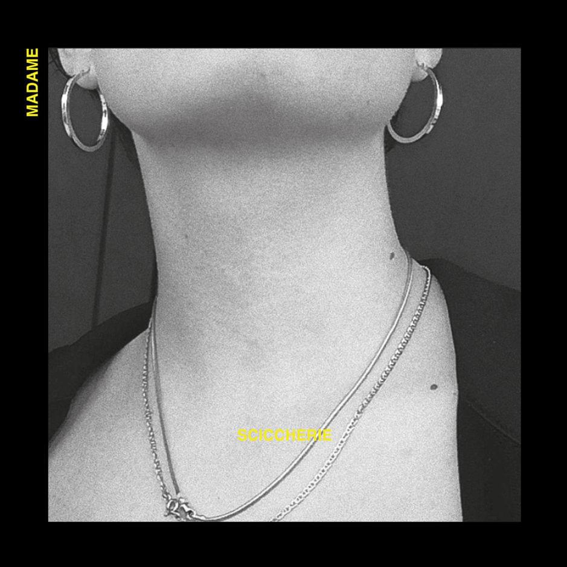

Sciccherie - Madame
Certe sere in cui mi manca a merda, e sì che è lì, eh
Uscire con due calici e le sciccherie
Ciao amore bibbi, quanto bello, però succhia lì, eh
Un poco ancora perché ficcatine, fidati che [...]